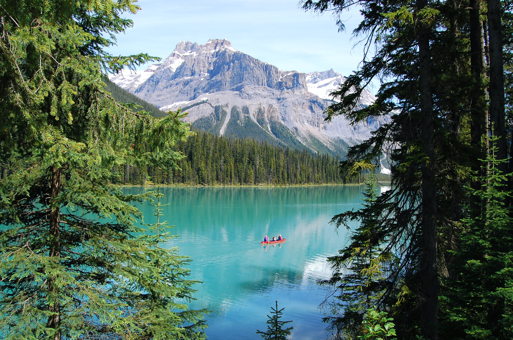
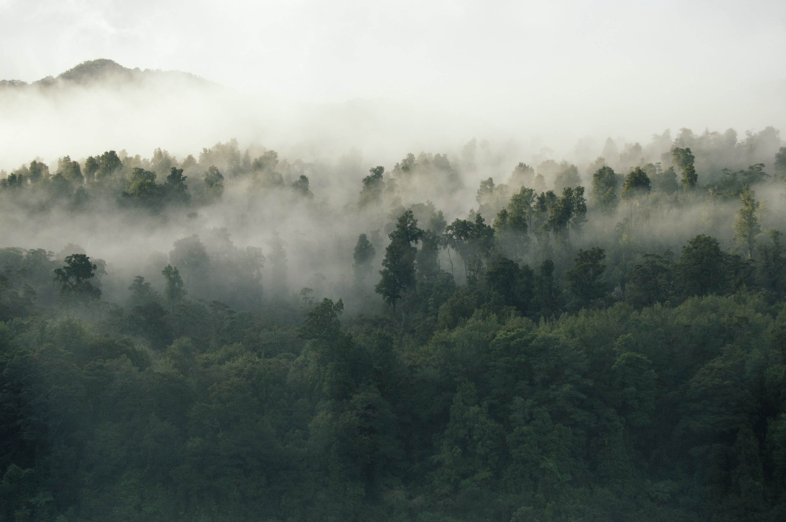

생물과 무생물의 조화
호수, 바다, 산, 풀, 꽃, 나무, 돌, 바위, 흙, 구름, 안개, 하늘, 햇빛 등.
수 많은 생물, 무생물들이 이토록 조화롭게 어울려 아름다울 수 있음이 너무 신기하고 감사하다.
지금부터 보여줄 사진들은 내가 사랑하는 자연의 아름다움이 담긴 사진들이다.






끝없이 드 넓은 우주에,
티끌만한 지구.
그 안에 한없이 작은 나.
인간이 아는 우주만 해도 정말 방대하게 넓다.
그런데 그 안에 생물과 무생물이 이토록 조화롭게, 아름답게 살고있는 행성이 있는가?
가능할지도, 가능하다면 언제일지도 모르겠지만
인간이 만든 기술들은 인간이 있다면 어떻게든 만들어낼테니
유일한 지구의 이 자연의 아름다움은
인간이 만들 수 없는 범위이니
지구에만 있는, 유일한 이 자연의 아름다움은 꼭 보존되길 바란다.